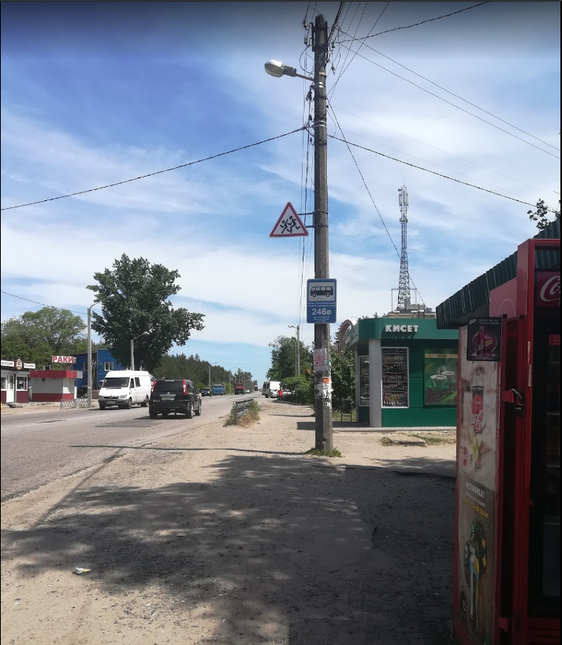

Народився 12 Січня 2002 року в Харкові. У 2017 році закінчив ХЗОШ №48. Зараз навчаюся у ХПКК на спеціальності "Інженерія програмного забезпечення"
Жихір - колишнє село, що засноване у XVII столітті

| столбец 1 строка 1 | столбец 2 строка 1-2 | столбец 3 строка 1-2 | столбец 4 строка 1-2 | столбец 5 строка 1-3 | столбец 6 строка 1-3 | столбец 7 строка 1 |
| столбец 1 строка 2 | столбец 7 строка 2-3 | |||||
| столбец 1 строка 3 | столбец 2-4 строка 3 | |||||